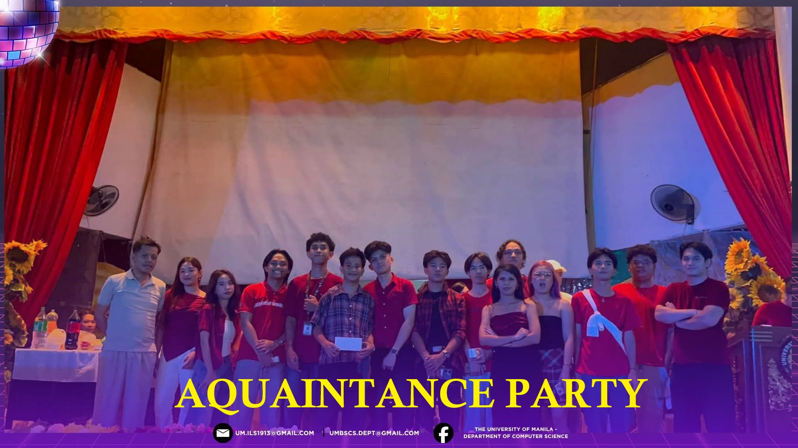
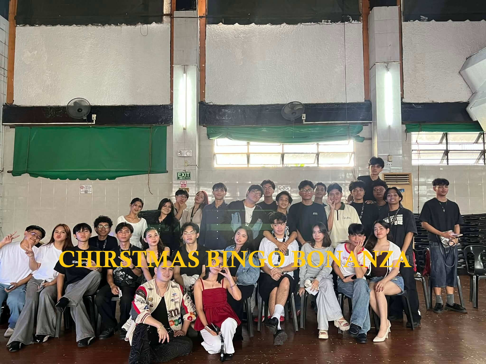
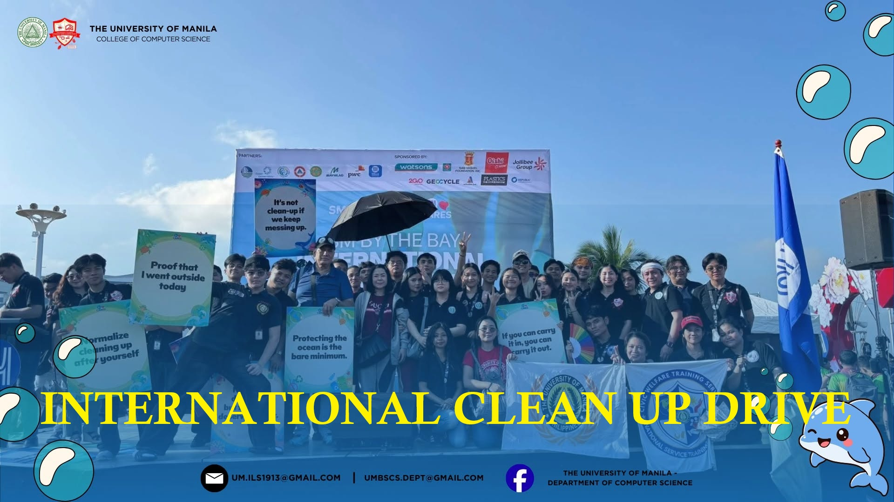
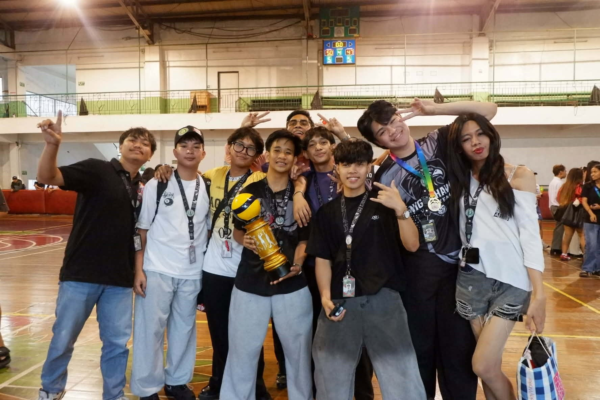
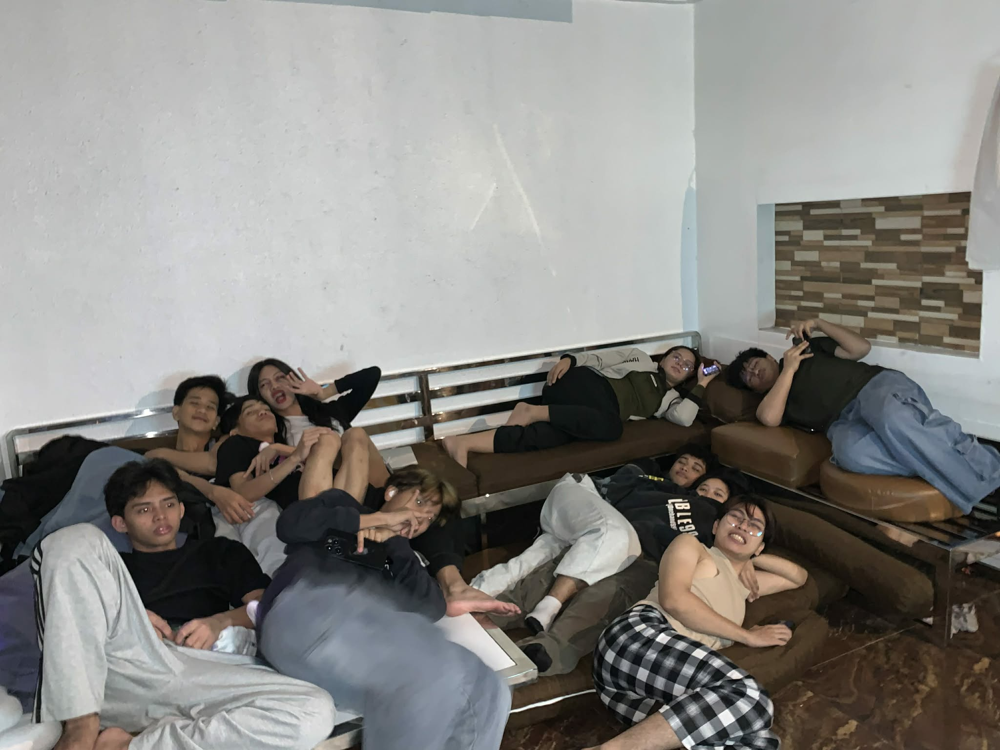

College of Computer Science
Computer Science Department
On October 5, 1913, a group of four young men and a woman, with ages from fifteen to twenty-one, met for breakfast at the Palma de Mallorca, a popular restaurant beside the Sto. Domingo Church in Intramuros, Manila. The five were Dr. Apolinario G. de los Santos, his brother Dr. Mariano V. de los Santos, his sister Maria de los Santos, and two friends Dr. Buenaventura J. Bello and Atty. Antonio Rivero.
We offer academic programs leading to the degree of Bachelor of Science in Computer Science and Associate in Computer Technology.
CS Mission
Provide quality undergraduate and graduate education in both the theoretical and applied foundations of computer science and train students to effectively apply this education to solve real-world problems, amplifying their potential for lifelong high-quality careers and giving them a competitive advantage in the ever-changing and challenging global work environment of the 21st century.
CS Vision
Build a strong research and teaching environment that responds swiftly to the challenges of the 21st century.
General Objectives
To produce technological and scientifically empowered professionals, information technology and computer science experts whose breadth and depth of orientation, knowledge, and training are within global standards, committed to share their expertise with the various sectors of the academic community and the community at large, ever motivated by the UM trilogy of ideals.
Specific Objectives
To equip students with the skills and competencies in information communications technology, its operation, language, and design. To prepare graduates with a solid foundation on the various languages, programs, and systems to enable them to perform with confidence the varied tasks expected of them in global organizations of the corporate world.
UM EVENT & CS EVENT







